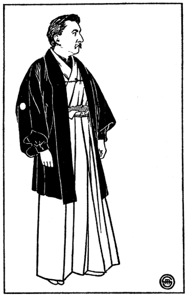

Contenido
Cubierta
Libro al viento
Portada
Créditos
Introducción
Julio Paredes
Algunos espectros orientales
El secreto de la muerta
Oshidori
Jikininki
Ubazakura
Diplomacia
El sueño de Akinosuké
La doncella del espejo
La historia de Kogi el sacerdote
El espíritu de la gran campana
La Historia de Ming-Y
Aullido
Furisodé
Una historia de adivinación

Lafcadio Hearn